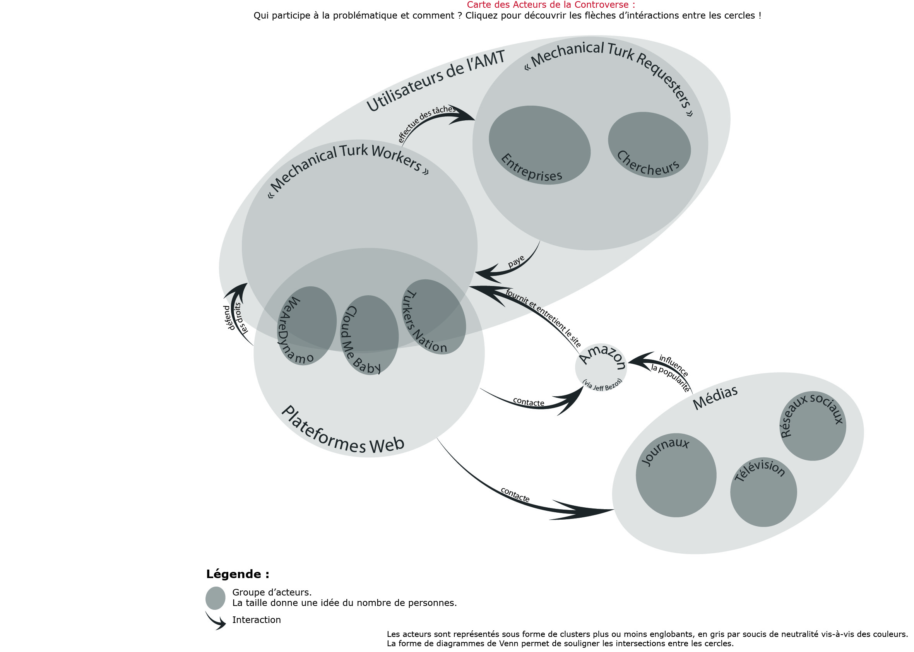

Carte des acteurs
Le graphe ci-dessous présente différents acteurs qui prennent part au débat sur le turc méchanique d'Amazon.
Les acteurs sont regroupés en un grand nombre de sphères, ce qui montre que l'AMT est un
sujet au cœur de notre société.

Voici une version interactive de la carte des acteurs:
et l'analyse des acteurs:
- Journaux : C’est à travers les journaux (papiers et dématérialisés) qu’a été popularisée la controverse, puisqu’ils ont d’une part fait connaître l’A.M.T. à beaucoup mais ont aussi inclus cette controverse dans la problématique plus large du travail indépendant et du crowd working.
- Télévision : Tout comme les journaux, les télévisions ont fait parler de l’A.M.T. partout dans le monde. C’est par l’intermédiaire de certains reportages montrant des turkers à la tâche que les spectateurs ont pu se poser des questions éthiques et légales sur le système du turc mécanique.
- Réseaux Sociaux : Dans cette controverse les réseaux sociaux ont joué un rôle majeur. Ceux-ci sont en effet un moyen de diffusion des articles sur internet à l’aide de l’outil de partage, mais sont aussi et surtout des espaces de discussions où les turkers ont pu comparer leurs rémunérations et conditions de travail.
- We are Dynamo : Ce projet, lancé par Niloufar Salehi, Lilly Irani et Michael Bernstein consiste en un site web sur lequel quiconque peut s’inscrire et contribuer à une mobilisation collective. Une lettre ouverte à Jeff Bezos y est par exemple postée sous forme de wiki auquel chacun peut contribuer.
- Turker Nation : Ce forum est à la base une plateforme sur laquelle les turkers peuvent discuter et notamment prévenir les autres lorsque des HITs intéressants sont disponibles. Ont peut maintenant régulièrement y voir des conversations sur les droits des turkers et des travailleurs indépendants.
- Cloud Me Baby : Regroupant à la fois des turkers mais aussi les membres d’autres plateformes de croud working, ce site permet aux utilisateurs de communiquer entre eux pour maximiser leurs gains, mais aussi, plus généralement, de partager leurs expériences, qu’elles soient bonnes ou mauvaises.